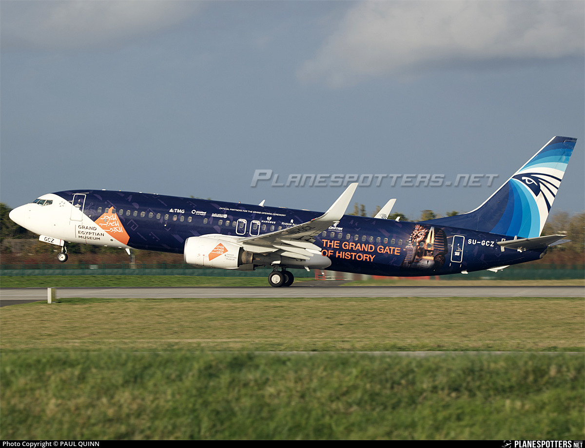
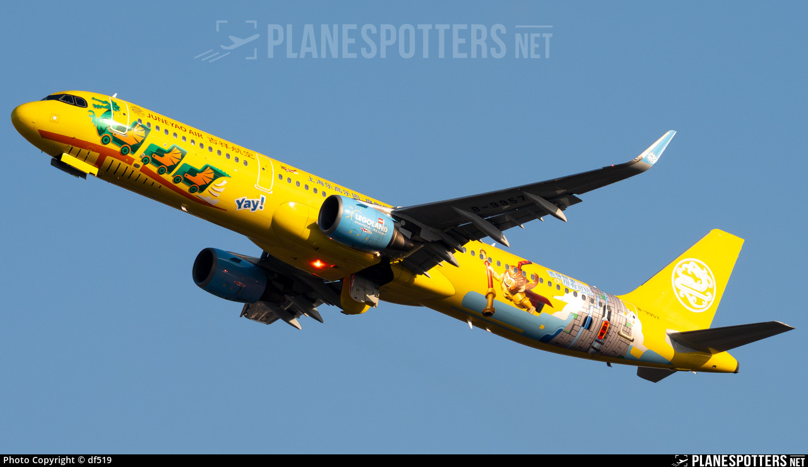
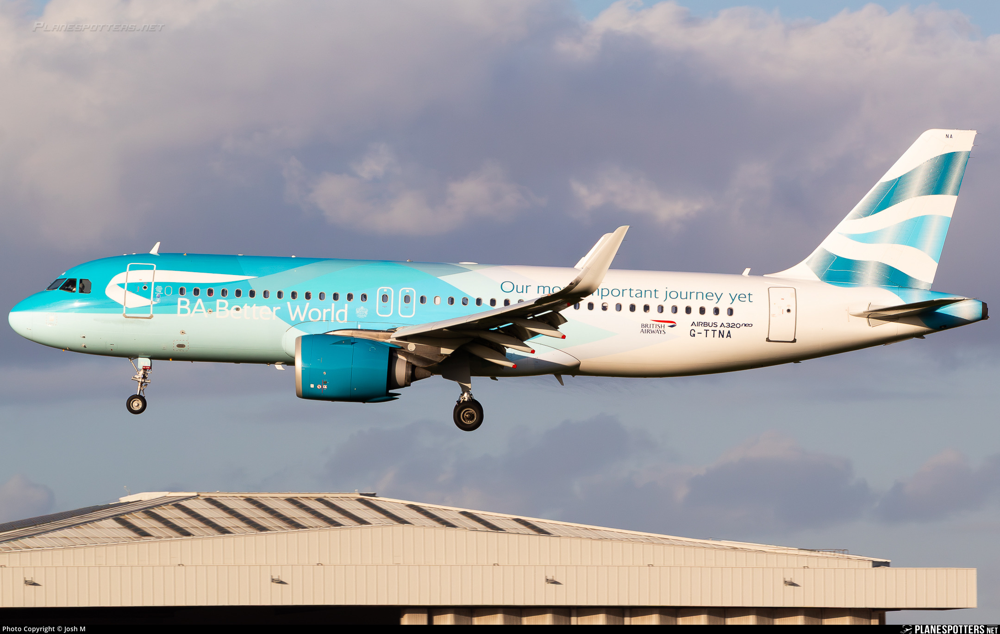
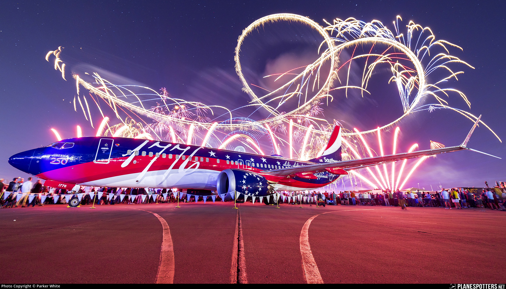
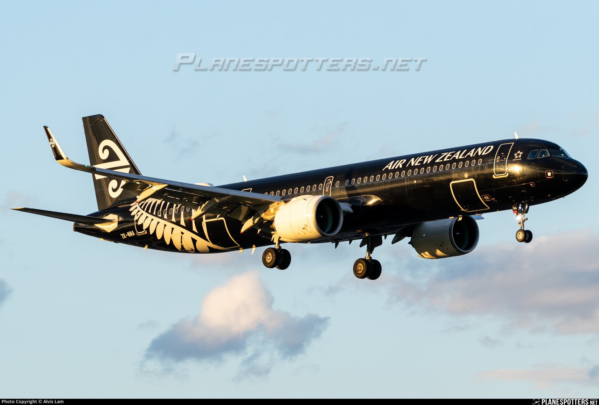
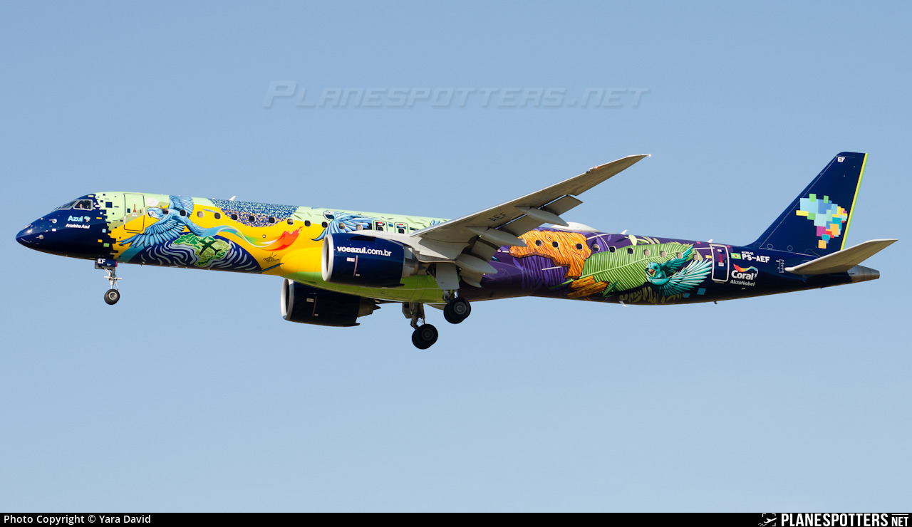

One Continent. One Livery.
Aviation is not only about getting from point A to point B. It is a story.
Many airlines today have customized a part of their fleet to stand out amongst others. The best part is, they are all unique.
Africa

PAUL QUINN ©
Egyptair - Grand Egyptian Museum Livery.
The EgyptAir Grand Egyptian Museum livery is a stunning tribute to Egypt's rich history and cultural heritage. Inspired by the opening of the Grand Egyptian Museum in Giza, the special design celebrates the country's ancient civilisation while showcasing its modern identity. Featuring distinctive Egyptian-inspired artwork and iconic golden tones, the livery beautifully combines aviation with history, turning the aircraft into a flying tribute to one of the world's greatest civilisations.
Asia

df519 ©
Juneyao Air - LEGOLAND
The Juneyao Air LEGOLAND livery is a vibrant and playful design inspired by the colourful world of LEGO. Featuring a bright yellow base with eye-catching LEGO-themed graphics, the aircraft celebrates creativity, imagination and the fun of LEGOLAND. Its cheerful appearance makes it stand out from traditional airline liveries, bringing a little of the magic of LEGO into the skies.
Europe

Josh M ©
British Airways - Better World
The British Airways Better World livery represents the airline's commitment to building a more sustainable future for aviation. Featuring a distinctive design inspired by environmental awareness, the special livery highlights British Airways' efforts to reduce its environmental impact and promote more responsible flying. It serves as a flying reminder of the importance of sustainability and the airline's ambition to create a better world for future generations.
North America

Parker White ©
Southwest Airlines - Freedom One
The Southwest Freedom One livery celebrates the 250th anniversary of American independence and the nation's history. Featuring a striking design inspired by the American flag, with its iconic red, white and blue colours and patriotic details, the aircraft pays tribute to the founding of the United States in 1776. This special livery brings a piece of American history into the skies, commemorating the country's journey and its enduring spirit of freedom.
Oceania

Alvis Lam ©
Air New Zealand - All Blacks
The Air New Zealand All Blacks livery is a striking tribute to New Zealand's famous national rugby team. Featuring an almost entirely black design, the aircraft reflects the team's iconic colours and strong sporting identity. The special livery celebrates the close connection between the airline and New Zealand's sporting culture, making the aircraft instantly recognisable wherever it flies.
South America

Yara David ©
Azul - Ararinha Azul (Spix's Macaw)
The Azul Ararinha Azul livery is a colourful tribute to Brazil's rich wildlife and natural beauty. Featuring vibrant illustrations of tropical birds, lush vegetation and other elements of the Amazon rainforest, the design celebrates the country's incredible biodiversity. One of its main highlights is the Spix's macaw, an endangered blue parrot native to Brazil. This unique livery transforms the aircraft into a flying celebration of Brazil's nature and conservation efforts.